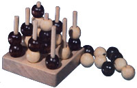
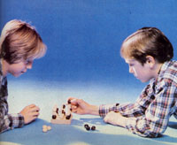
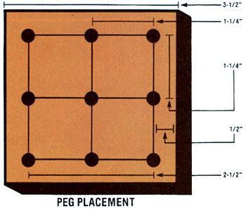

Keep cabin fever at bay with a new version of an old pastime... 3-D Tick-Tack Toe !
This little game-the "board" for which can be made in one evening-is simply a much more challenging version of the tick-tack-toe almost all of us played (and quickly mastered) as children . . . and the three-dimensional version makes the childhood pastime fun again, even for grown-ups!
The only tools required to construct a 3-D tick-tack-toe set are a saw (a handsaw will do) and a drill (preferably electric) with a 17/64" or 9/32" drill bit. The materials list is equally modest. It includes a 26" section of a 1/4" dowel (you should be able to purchase a 36" length for under 25 cents) . . . a scrap of 1 X 4 (preferably hardwood, but softwood is OK) ... 28 macramé beads with 1/4" holes, which cost 10 to 20 cents apiece (get 14 each of two different colors) ... and finishing materials (sandpaper, glue, and stain or varnish).
To make the base of the game board, saw a 3-1/2" square from the 1 X 4 stock. Next, cut nine 2-3/4" pieces of dowel (to use as the game's upright "posts") and mark the peg holes on the base.
The best way to position the holes-to-be is to draw a 2-1/2" square on the board, centered and 1/2 inch from all edges (see the accompanying diagram). The corners of this square will serve as the centers for the four corner pegs. Now, measure and mark the halfway point (1-1/4") between each two corners. These spots should be used as the centers for the four remaining perimeter peg holes. Finally, simply connect the last four points with two straight lines, and their intersection will position the middle peg.
Before you drill holes at your marked points, you should-as a precaution-begin each one with a center punch or a nail. This will prevent the bit from drifting, which would result in an off-center bore. (If you use a handheld drill, be extremely careful to keep it perpendicular to the base.) The holes should be 1/2" deep (an easy way to make sure they're all the same depth is to wrap a thin strip of masking tape around the drill to serve as a temporary gauge).
After you've finished drilling, the board should be sanded and finished to your taste. (You can also smooth and stain or seal the to-be-exposed ends of each of the nine pegs.) Once the finishing process is completed and all the parts are dry, glue the pegs into the holes, taking care that they remain perpendicular to the board as the glue sets up. Then, get out your beads . . . and you're ready to play!
In this three-dimensional version, tick-tack-toes are scored not only in the usual horizontal ways-on three levels!-but also vertically, or at an angle from bottom to top. With a well-placed bead, therefore, a player may be able to complete more than one row in a single move! For example, if you place one of your beads on top of two of your own, you score a vertical tick-tack-toe, but-if you're lucky and/or clever-that same bead could finish a horizontal and a diagonal row as well, totaling three points in one move.
The object of the game, of course, is to score more tick-tack-toes than your opponent. After any impartial method has determined who moves first, the players alternately place a bead over any peg on the playing board in an effort to build or block a three-in-a-row move. The only restriction is that the beads may not be stacked more than three high on a single peg. The player with the most points-after all 27 positions are filled-wins.
A variation of the game (which is easier for youngsters to master) is to play only until someone scores . . . rather than continuing until 27 of the beads have been brought into play. In this version, the first to score a tick-tack-toe in any direction is the winner!
|
 |
 |
 |